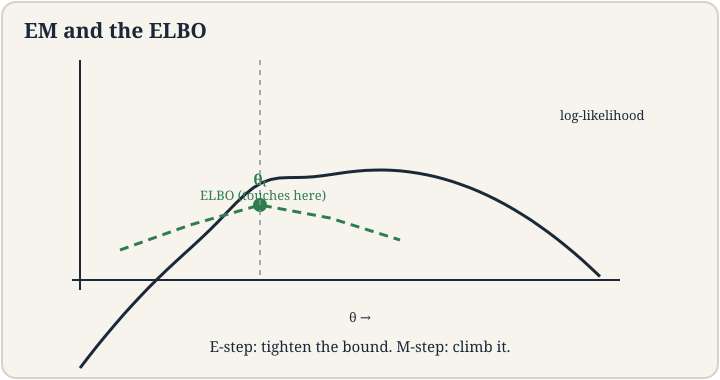
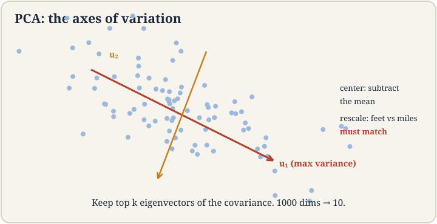

Lecture 10: EM Algorithm and Principal Component Analysis
Video blocked (ad-blocker or local file mode).
Watch on YouTubeVideo not loading? Watch on YouTube
Original lecture. Chris Ré derives EM via the ELBO and presents PCA as the workhorse of dimensionality reduction.
How to read this lesson
This lesson has two levels. Level 1 (Core) contains what you need to understand everything that follows in CS229 and the courses that build on it. Level 2 (Deep) contains what you need for correct, interview-grade understanding. Read Level 1 straight through. Return to Level 2 when you want depth.
No prerequisites are assumed. Every term is defined at first use. K-means and the GMM setup were defined in lecture 9; they are reused, not re-explained.
Level 1: The problem EM solves
Fitting a GMM by MLE hits a wall: the log likelihood has a sum inside the log. Log of a sum resists every trick. The latent variable z_i 01:48 ⏱01:48 is the missing piece: which Gaussian generated point i. If we knew z, fitting would be easy weighted averages. We do not know z. EM iterates: guess z softly, fit parameters to the guess, repeat.
Jensen’s inequality 04:26 ⏱04:26 is the tool. For a concave function like log, the log of an average is at least the average of the logs. Applied to the likelihood, it builds a tractable lower bound: the ELBO, the evidence lower bound 18:59 ⏱18:59. Maximize the bound instead of the likelihood. The bound touches the likelihood at the current parameters, so climbing the bound climbs the likelihood.

Two guarantees make EM trustworthy. The likelihood never decreases across iterations. And the E-step makes the bound tight 08:37 ⏱08:37: equal to the likelihood at the current parameters, so no progress is wasted on a loose bound. EM converges to a local optimum, like k-means. Same alternating pattern, grown probabilistic.
Likelihoods with hidden variables, where the log wraps a sum. The sum inside the log blocks closed forms and clean gradients. EM introduces a distribution over the hidden variables, builds the ELBO lower bound via Jensen’s inequality, and alternates between tightening the bound and maximizing it. The likelihood rises every iteration by construction. The E-step sets the bound equal to the likelihood at the current parameters (tight). The M-step maximizes the bound, moving to parameters with bound at least as high. Since the bound is always below the likelihood, the new likelihood is at least the new bound, which is at least the old likelihood. Three links, each solid.
Level 1: E-step and M-step on the GMM
The E-step 10:00 ⏱10:00: fix the parameters theta, and set Q_i(z) to the posterior p(z | x_i; theta). In plain words: for each point, compute how likely each cluster generated it under the current Gaussians. Those are the responsibilities from lecture 9: 60/40 splits, not hard assignments.
The M-step 40:57 ⏱40:57: fix the responsibilities, and update the parameters by weighted MLE. Each Gaussian’s mean becomes the weighted average of points, weighted by responsibility. Covariances and mixing weights update the same way. This is exactly “fit given assignments” from k-means, with soft weights.
Then repeat. E guesses the hidden structure. M fits the visible parameters to the guess. The photon plate from lecture 9 runs through both: each photon’s source probabilities update, then the source positions update, until both stabilize.
The posterior distribution over the hidden variables given the data and current parameters. For a GMM, that is each point’s responsibility vector: the probability each cluster generated it. It is called E for expectation because the M-step will take expectations under this distribution. Conceptually: your best current guess at the hidden structure. That is k-means: hard assignments, the zero-temperature limit. Soft assignments keep uncertainty alive, which matters when clusters overlap. The hard version converges faster per step but to worse answers on overlapping data. EM’s softness is the generalization. K-means is the special case.
Level 1: PCA, the workhorse
Principal component analysis is the canonical dimensionality reduction 00:37 ⏱00:37. Data lives in 1000 dimensions. You suspect 10 directions carry the signal. PCA finds them.
Two preprocessing steps, both load-bearing. Center the data: subtract the mean 51:37 ⏱51:37. Rescale: divide each feature by its standard deviation 54:52 ⏱54:52. The feet-versus-miles warning: a feature measured in feet has huge numbers and would dominate the variance purely through units. Rescaling puts every feature on equal footing. Skip it and PCA discovers your unit choices, not your data.

Then: find the orthonormal directions of maximum variance. Direction one, u_1, maximizes the projected variance. Direction two, u_2, maximizes among directions orthogonal to u_1. And so on. The solution: the eigenvectors of the covariance matrix Sigma, sorted by eigenvalue 03:04 ⏱03:04. Keep the top k. Project the data onto them. 1000 dimensions become 10, keeping the axes where the data actually varies.
The instability caveat: if two eigenvalues are close, their eigenvectors are unreliable. The data cannot distinguish the directions, so the returned axes wobble between runs. Eigenvalue gaps measure how much to trust each component. A big drop after eigenvalue k says k components are real.
Projected variance along a unit direction u is u^T Sigma u. Maximizing a quadratic form over unit vectors gives the top eigenvector; the maximum value is the top eigenvalue. Each next direction is the top eigenvector of what remains, by orthogonality. The eigenvalues rank the directions by variance carried. The linear algebra and the statistics agree exactly. When the interesting structure is nonlinear: PCA only finds straight axes. When features have meaningful different scales you want preserved: rescaling destroys that. When you need the original features interpretable: principal components are mixtures. And when variance is not the signal: a low-variance direction can be the predictive one.
Level 2: The ELBO derivation, in words
The likelihood of one point: sum over z of p(x, z; theta). Take the log: log-sum, the hard object. Introduce any distribution Q(z). Multiply and divide inside: log sum_z Q(z) * p(x,z;theta)/Q(z). Jensen: log of expectation >= expectation of log. Result: sum_z Q(z) log p(x,z;theta)/Q(z). That is the ELBO.
The E-step chooses Q to make Jensen tight: Q(z) = p(z | x; theta). Then the bound equals the likelihood at theta, and the M-step’s climb counts fully. Any other Q gives a valid but looser bound: still monotone, slower progress. The posterior is not just natural. It is optimal for the bound.
One more connection the lecture stresses: diffusion models train on ELBOs under the hood. Lecture 11’s denoising objective is a variational bound of exactly this shape, with the noising steps as the latent variables. Learn the pattern here and the diffusion derivation is familiar.
Level 2: PCA as variance budgeting
The eigenvalues sum to the total variance. Keeping the top k eigenvectors keeps (sum of top k eigenvalues) / (total) of the variance. This ratio is the honest report of what reduction cost: “10 components keep 94% of variance” is a complete summary. Plot cumulative variance against k and the curve tells you where the signal ends.
PCA is also the optimal linear compressor in squared error: no other k-dimensional linear projection reconstructs the data better. Nonlinear methods can beat it, but among linear maps it is unbeaten. That optimality is why it is the default first try, not just a habit.
Recap: the whole lesson on one screen
Eight ideas carry this lecture. Read each card. Say the core sentence out loud. If you can, you own the lesson.
Log of a sum resists closed forms. The latent z says which Gaussian made each point. Guess it softly, fit, repeat.
Key: log-sum is the wall
Log of average >= average of logs. The evidence lower bound is tractable. Climb the bound, climb the likelihood.
Key: lower bound, always below
E: responsibilities = posterior p(z|x). M: weighted MLE for means, covariances, weights. Likelihood never decreases.
Key: alternate to a local optimum
The E-step sets Q to the posterior, making bound equal likelihood at theta_t. No wasted climb on a loose bound.
Key: Q = posterior is optimal
Eigenvectors of the covariance, top k kept. 1000 dims to 10. Optimal linear compressor in squared error.
Key: u^T Sigma u maximized
Subtract the mean. Divide by per-feature std. Feet vs miles: units must not vote. Skip it and PCA finds your units.
Key: preprocess or perish
Close eigenvalues mean wobbly eigenvectors. A big drop after k says k components are real. Report variance kept.
Key: gaps, not just values
Lecture 11's training objective is a variational bound of this shape. Learn the pattern once, recognize it everywhere.
Key: the pattern recurs
Official sources and further reading
Official: - Lecture 10 video: latent variable 01:48 ⏱01:48, Jensen 04:26 ⏱04:26, tight 08:37 ⏱08:37, E-step 10:00 ⏱10:00, ELBO 18:59 ⏱18:59, M-step 40:57 ⏱40:57, center 51:37 ⏱51:37, rescale 54:52 ⏱54:52, PCA workhorse 00:37 ⏱00:37. - CS229 Spring 2026 official course notes: EM and PCA chapters.
Further reading: - Dempster, Laird, and Rubin (1977), “Maximum Likelihood from Incomplete Data via the EM Algorithm”: the founding paper. - Jolliffe, Principal Component Analysis: the reference text.
Caveats from these sources. EM converges to local optima; restarts matter as in k-means. The monotone-likelihood guarantee assumes exact E and M steps; approximations break it. PCA’s optimality is among linear maps only. Eigenvector signs are arbitrary: flipped components are the same answer.
Connections to the other courses
- CS336: diffusion models train variational bounds of the ELBO shape derived here.
- CS224N: EM trains word-alignment models in machine translation; the alternating pattern is identical.
- CS329H: variational inference generalizes EM; the ELBO is the shared object.
EM and PCA cheatsheet. EM: hidden z blocks MLE; Jensen gives ELBO; E sets Q = posterior (tight); M does weighted MLE; likelihood monotone up; local optimum. GMM: E = responsibilities, M = weighted averages. PCA: center, rescale, eigenvectors of covariance, top k; eigenvalues rank variance; gaps measure trust; report variance kept. Preprocess or the units vote.
Bound the hard thing, climb the bound. When the objective resists attack, find a tractable lower bound that touches it, maximize the bound, repeat. EM is the pattern. Diffusion is the sequel.
Sources
- VIDEOLecture 10 video, Stanford Online YouTube
- NOTESOfficial subtitle transcript (en-US)
- NOTESCS229 Spring 2026 official course notes (local PDF)